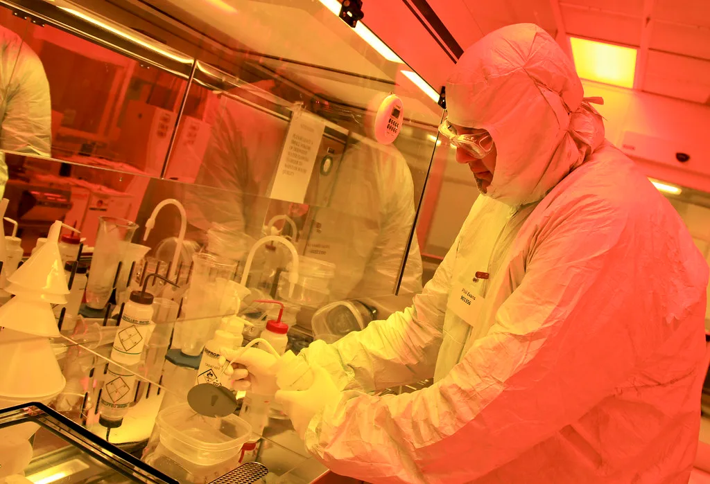

TSMC, 3분기 매출 '사상 최대'…AI 반도체 호황에 6개 분기 연속 기록 경신
세계 최대 파운드리(반도체 위탁생산) 업체 TSMC가 15일 3분기 실적을 공개했다. 3분기 매출은 1조4942억 대만달러(약 62조원)로 전년 동기 대비 50.9% 늘며 사상 최대치를 기록했다. 분기 매출이 시장의 당초 가이던스와 애널리스트 전망치를 모두 웃돌면서, TSMC는 6개 분기 연속 기록을 새로 쓰게 됐다. 이날 발표와 함께 열린 투자자 컨퍼런스콜에서는 4분기 및 연간 실적 전망도 함께 공개됐다.
실적 호조를 이끈 핵심 동력은 역시 인공지능(AI)이다. 엔비디아와 애플을 비롯한 주요 빅테크 기업들의 핵심 파운드리 협력사인 TSMC는 올해 내내 AI 가속기와 첨단 공정 수요가 공급을 웃도는 상황을 겪어왔다. 증권가에서는 TSMC의 순이익이 전년 동기 대비 60%대 중후반 증가할 것으로 내다보고 있으며, 이 같은 전망이 현실화되면 순이익 기준으로도 사상 최고치 경신이 유력하다.

TSMC의 호실적을 뒷받침한 또 다른 축은 첨단 패키징 기술인 CoWoS(칩 온 웨이퍼 온 서브스트레이트)다. 고대역폭메모리(HBM)와 로직 칩을 하나로 묶어내는 이 패키징 기술은 AI 가속기 생산에 필수적인 공정으로 꼽히는데, TSMC는 올 한 해 관련 생산능력을 지속적으로 확충해왔다. 업계에서는 CoWoS 수요가 당분간 공급을 웃도는 구조가 이어질 것으로 보고 있어, TSMC의 가격 결정력도 한층 강화될 전망이다.
이번 실적은 국내 반도체 업계에도 적지 않은 영향을 미칠 것으로 보인다. TSMC가 파운드리 영역에서 압도적 호황을 누리는 동안, 메모리 분야의 삼성전자와 SK하이닉스도 HBM 수요 확대의 수혜를 함께 누리고 있다. AI 반도체 생태계가 로직(파운드리)과 메모리 양 축에서 동시에 호황기를 맞고 있다는 점에서, TSMC의 실적은 글로벌 반도체 업황을 가늠하는 선행지표로도 주목받는다.
TSMC의 첨단 공정 가동률은 올해 들어 줄곧 높은 수준을 유지해왔다. 3나노 이하 초미세 공정 라인은 이미 완전 가동 상태에 가깝다는 평가가 나오며, 신규 라인 증설도 예정보다 앞당겨 진행되고 있는 것으로 전해졌다. 공급이 수요를 따라가지 못하는 구조가 지속되는 가운데, 주요 고객사들은 생산 물량 확보를 위해 장기 공급 계약과 선입금 형태의 투자까지 병행하고 있는 것으로 알려졌다.
다만 시장의 시선은 단순히 이번 분기 실적을 넘어, TSMC가 내놓을 4분기 전망치와 2027년 설비투자 계획에 쏠려 있다. AI 인프라 투자가 과도한 차입에 기대고 있다는 우려가 최근 글로벌 증시 전반에서 불거진 가운데, TSMC가 제시하는 수요 전망은 이러한 'AI 버블' 논쟁의 신뢰도를 가늠하는 잣대로도 받아들여지고 있다. 실제 주문 기반 매출 성장이라는 점에서 TSMC 실적은 상대적으로 설득력 있는 신호로 평가된다.
업계에서는 TSMC의 이번 실적 발표가 AI 반도체 수요의 지속성을 보여주는 근거가 될지, 아니면 공급 과잉 우려를 키우는 또 다른 변수가 될지 엇갈린 해석을 내놓고 있다. 어느 쪽이든 TSMC의 생산능력 확충 속도와 가격 정책은 앞으로도 글로벌 반도체 공급망 전반에 파급력을 미칠 수밖에 없는 만큼, 다음 분기 가이던스에도 관심이 집중되고 있다.